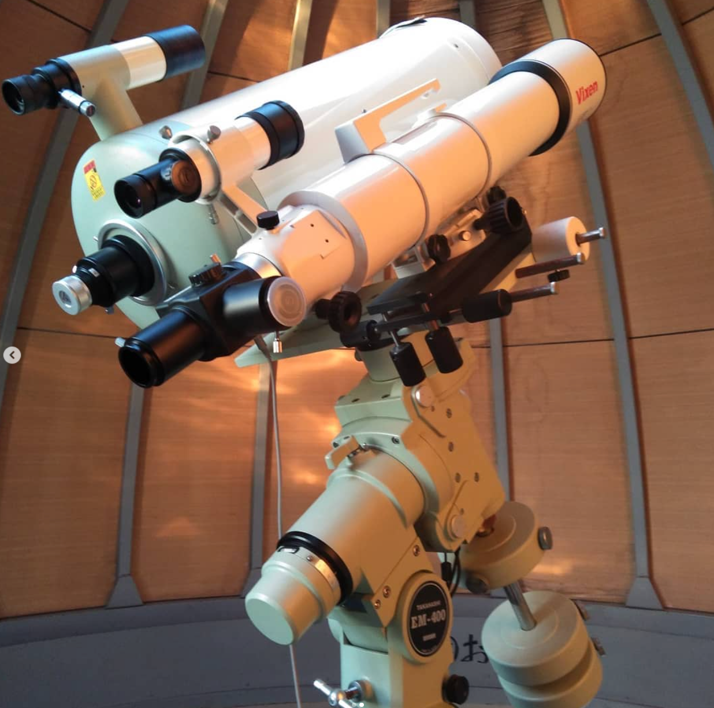

My life in NIT

I am really enjoying my life at the College of Technology. Attending this school is a new challenge and growth opportunity for me. The classes are very well organized and allow me to acquire specialized knowledge and practical skills. I especially like the programming classes and am excited to learn about system design and development. It is also great to be able to materialize my ideas through experiments and projects. There are plenty of off-campus activities and opportunities to join clubs and societies. I am a member of the astronomy club and observe celestial objects on a daily basis. There are many restaurants and cafes around the school where you can enjoy time with your friends. The school also has a well-equipped library and laboratories where students can concentrate on their studies. I am currently a fifth-year student at Tsuyama National College of Technology, and I am a member of the Mori Information Systems Laboratory. My research theme is neurofeedback using brain waves. I am studying how human brain activity can be altered. Our school's peaceful campus is filled with beautiful nature. This environment enhances our research activities.
| grade | event | memory |
|---|---|---|
| 1 | Entered Tsuyama National College of Technology | It was hard to get to and from home and school. |
| 2 | Global outbreak of coronavirus | Remote classes started, and I didn't go to school for about a year. |
| 3 | Back to regular classes. | I went to Iris Oyama for an internship. |
| 4 | Voted for the first time in the House of Councilors election | I put a lot of effort into studying for next year. |
| 5 | Passed Toyohashi University of Technology | I was able to become an adult. |